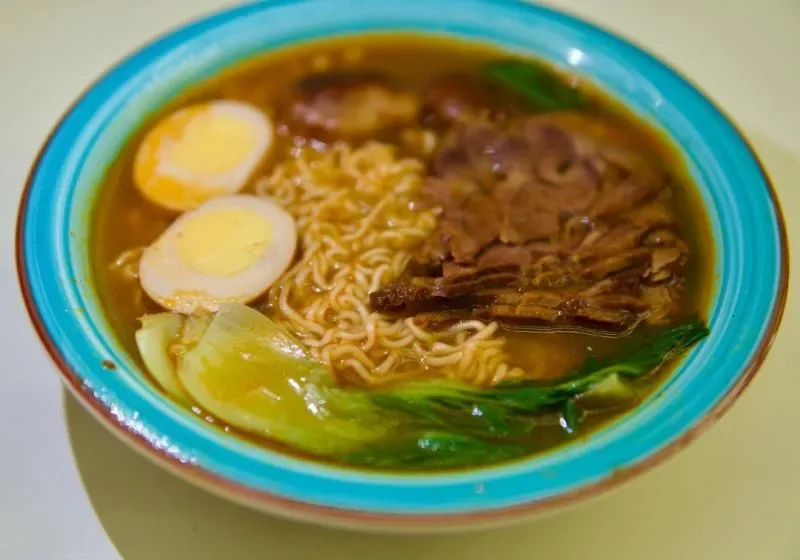
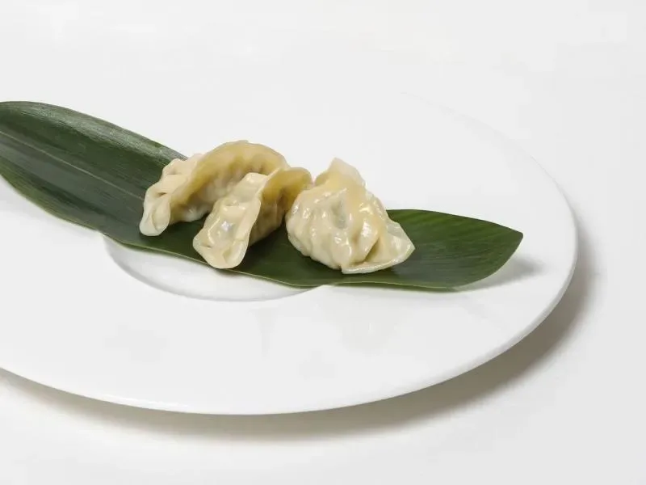
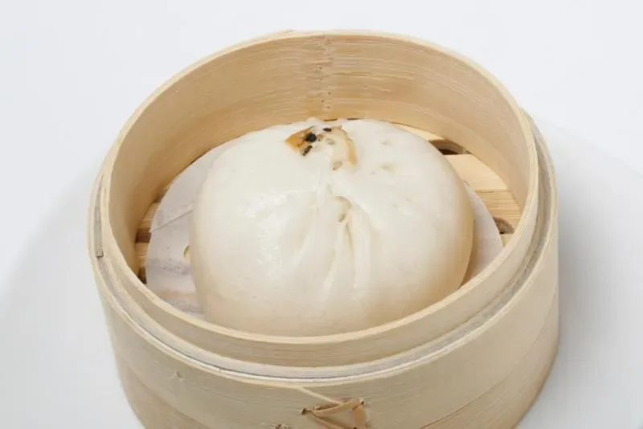

18 ORE di brodo. Non uno di meno.
GURU GURU
Capitolo 1 · Via Vigevano 18
Si mangia rumorosamente. È il modo giusto: aria + brodo + noodles. Non chiedere scusa.
— 01 —
Capitolo 3
Un cucchiaio, senza noodles. È lì che sono le 18 ore.
SLURPPochi alla volta, tirandoli su con aria. Rumorosamente.
ZURU ZURUIl chashu a metà, l’uovo alla fine: il tuorlo si scioglie nel brodo.
MOGU MOGUSi alza la ciotola con due mani. Se la posi vuota, hai fatto tutto bene.
GOKU GOKU— 03 —

Capitolo 1 · L’inizio
Kumo è nato in una cucina di sei metri quadri sui Navigli. Il primo anno abbiamo servito solo shoyu, perché il tonkotsu non era ancora abbastanza bianco. Adesso lo è: diciotto ore, ossa di maiale lombardo, schiumato a mano.
I noodles li tiriamo ogni mattina. I gyoza li chiudiamo a mano, uno per uno. Le vignette sono un gioco; il resto no.

FUWA FUWA— 04 —
Ultimo capitolo · Dove
— fine —
Confermiamo via SMS.